Les images sont rendues par le véritable code du jeu. Les portraits utilisent un atelier métrique synthétique, sans attribution géographique. Les scènes de famille et les prises sonores sont des inspections déclarées. La promenade ordinaire conserve ses admissions probabilistes. Ces preuves techniques ne remplacent pas le jugement artistique.
Vingt-huit silhouettes
Les proportions des enfants, les volumes de vêtements, les coiffures et les accessoires restent visibles sans leur palette.
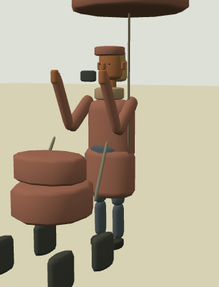
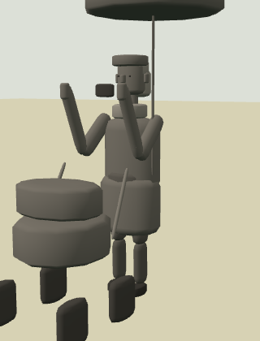
01 · baby · 0.70 m · raincoat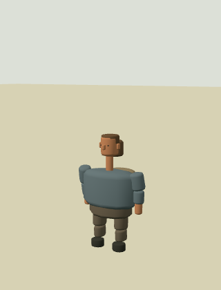
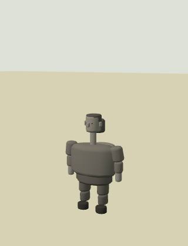
02 · young-child · 0.96 m · jacket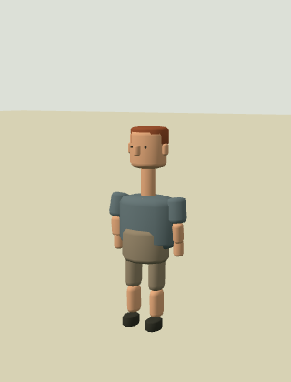
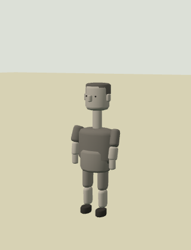
03 · child · 1.27 m · shorts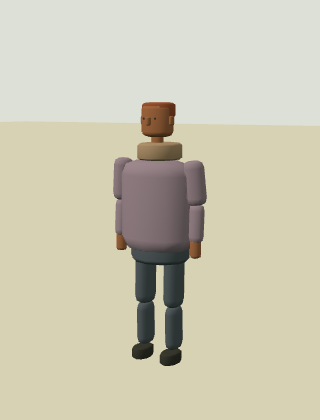
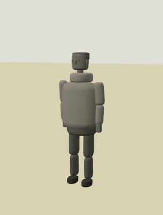
04 · teen · 1.47 m · jacket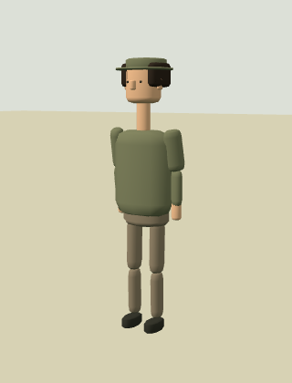
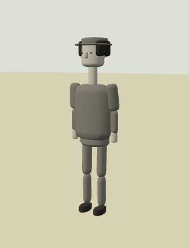
05 · young-adult · 1.65 m · shirt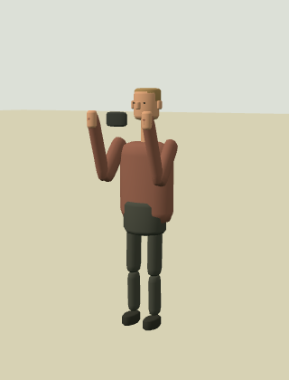
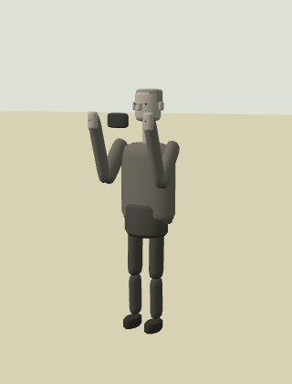
06 · adult · 1.50 m · shirt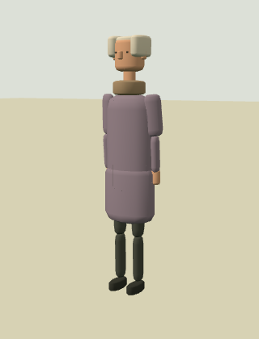
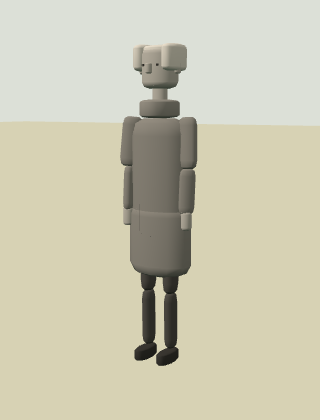
07 · senior · 1.78 m · coat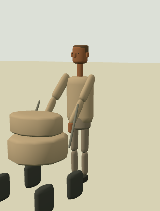
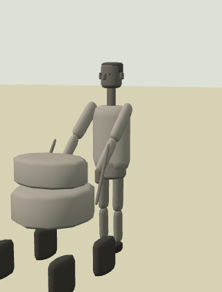
08 · baby · 0.80 m · jacket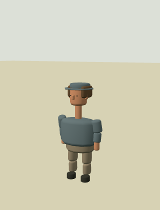
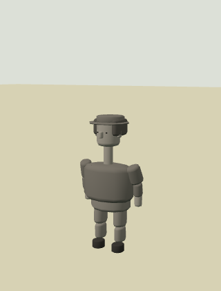
09 · young-child · 1.09 m · shirt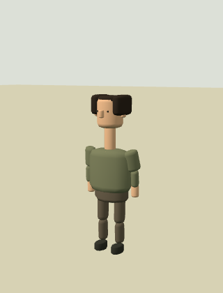
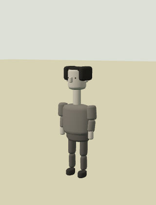
10 · child · 1.28 m · jumper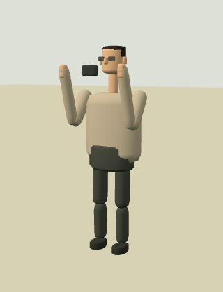
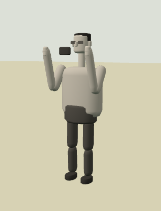
11 · teen · 1.67 m · shirt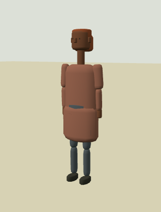
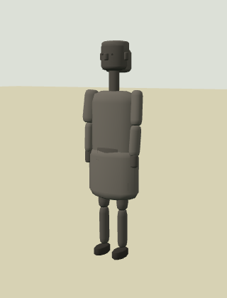
12 · young-adult · 1.72 m · raincoat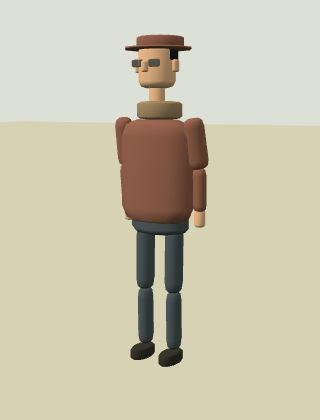
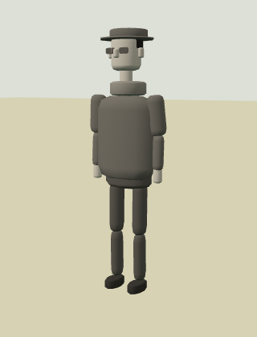
13 · adult · 1.80 m · jumper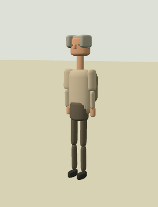
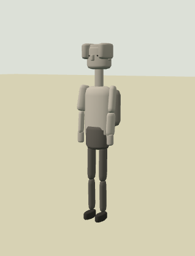
14 · senior · 1.64 m · jacket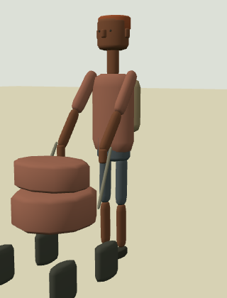
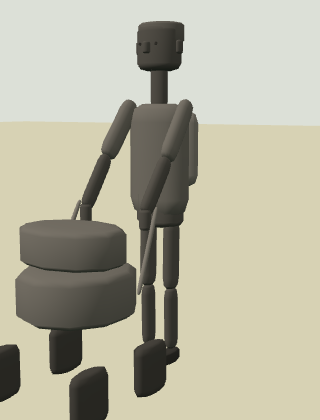
15 · baby · 0.81 m · shorts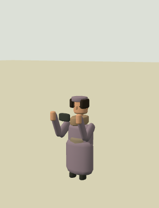
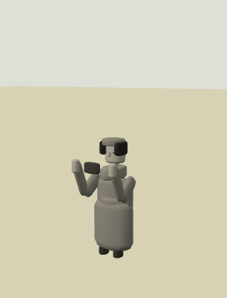
16 · young-child · 0.93 m · coat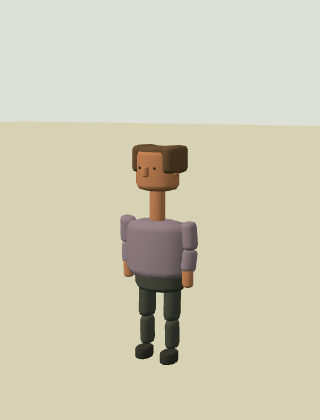
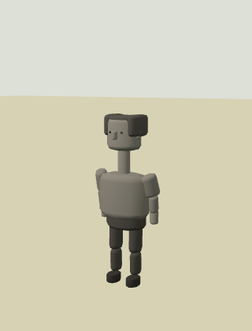
17 · child · 1.23 m · shirt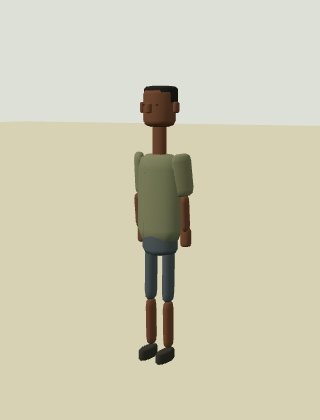
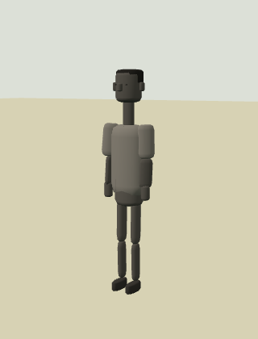
18 · teen · 1.56 m · tee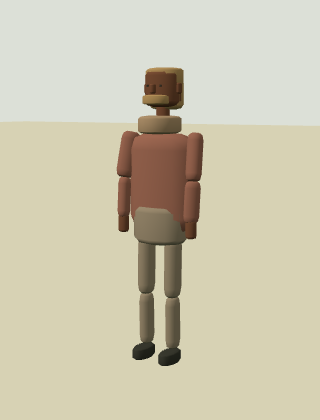
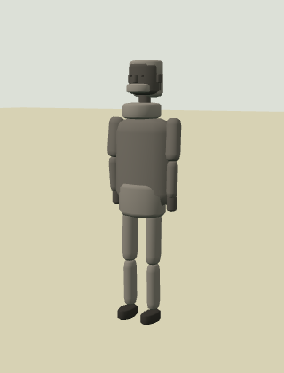
19 · young-adult · 1.66 m · jacket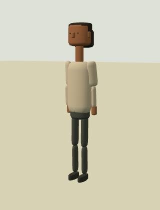
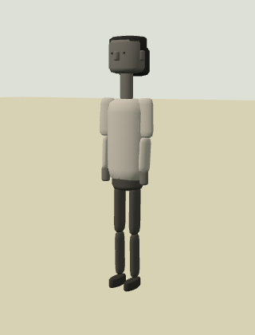
20 · adult · 1.78 m · jumper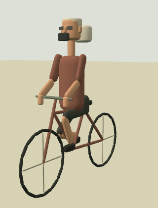
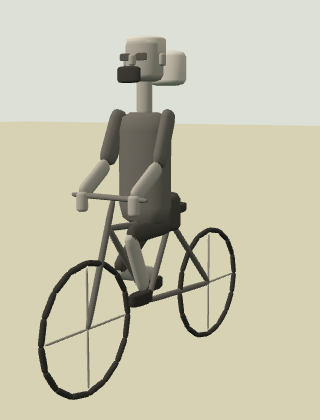
21 · senior · 1.82 m · shorts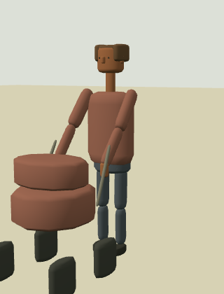
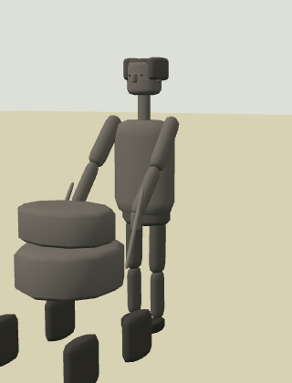
22 · baby · 0.70 m · jumper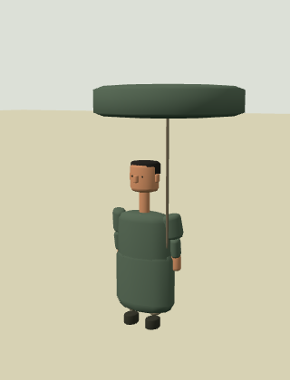
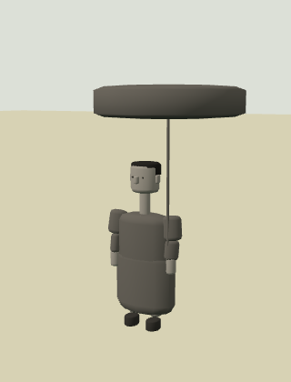
23 · young-child · 1.05 m · raincoat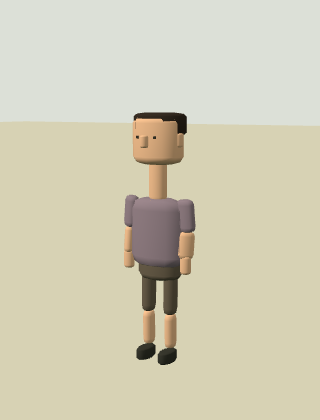
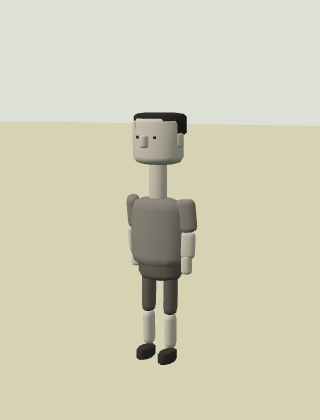
24 · child · 1.42 m · shorts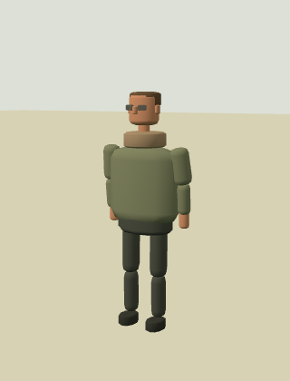
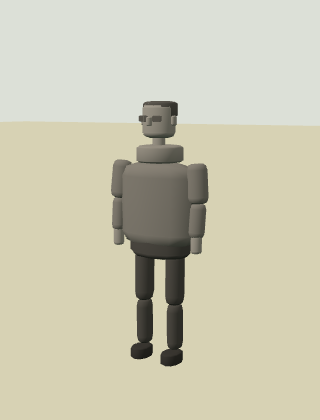
25 · teen · 1.48 m · jacket26 · young-adult · 1.80 m · jacket27 · adult · 1.87 m · tee28 · senior · 1.85 m · jacketFilms natifs et sons du moteur
Audio capturé après le limiteur du véritable AudioContext. Aucun ajout de bande-son après capture. Les conteneurs sont indexés sans réencoder les flux.
Une famille, de son départ à son retour
Ouvrir la captation native
Personne seule
Ouvrir la captation native
Couple
Ouvrir la captation native
Famille
Ouvrir la captation native
Chien qui renifle
Ouvrir la captation native
Conversation distante
Ouvrir la captation native
Rue et pas de groupe
Ouvrir la captation native
Conversation derrière un bâtiment
Ouvrir la captation native
Passant proche
Ouvrir la captation native
Voiture occasionnelle
Ouvrir la captation native
Village nocturne calme
Ouvrir la captation native
Promenade ordinaire — début
Ouvrir la captation native
Promenade ordinaire — milieu
Ouvrir la captation native
Promenade ordinaire — fin
Ouvrir la captation native
Modèles stylisés et activités fines incomplètes ; aucune entrée de maison, assise ou aire de pique-nique n’est inventée. Aucun déploiement du jeu.